長期トレンド
JKMとJEPXシステムプライスの推移グラフ
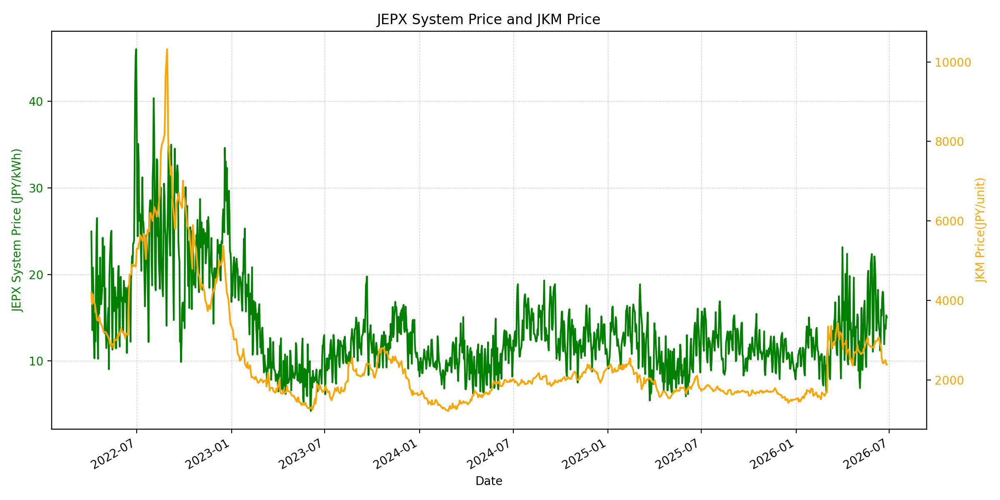
WTIの推移グラフ
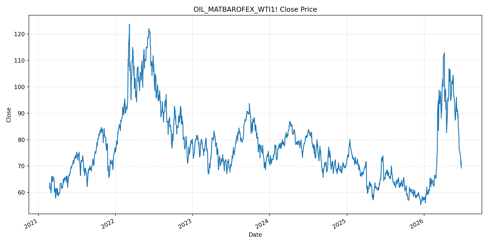
JEPXエリアプライスグラフ（直近一年分）
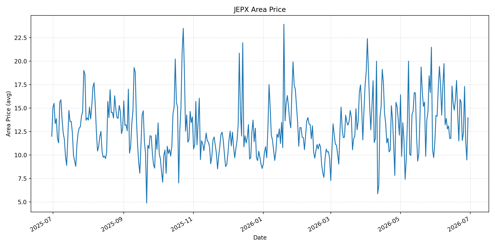
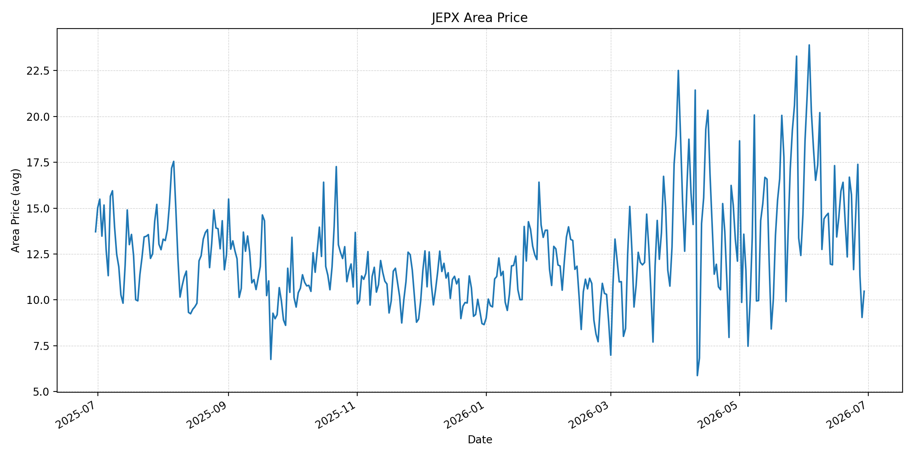
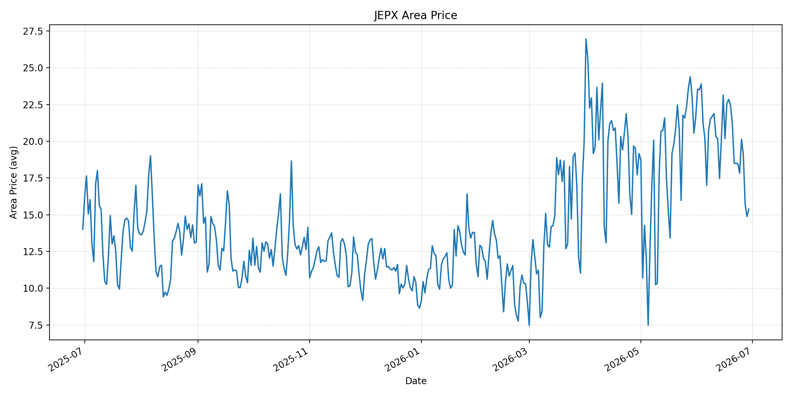
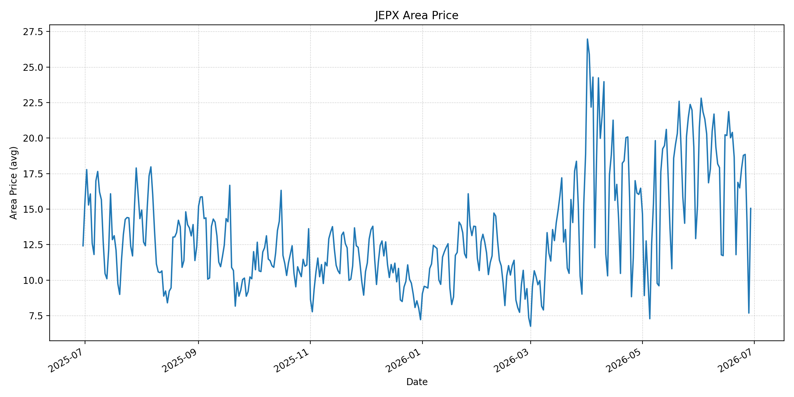
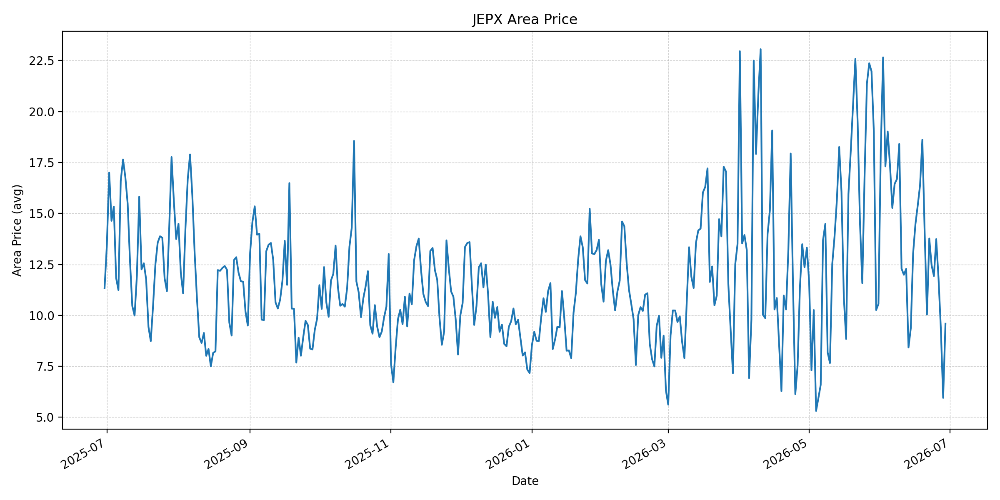
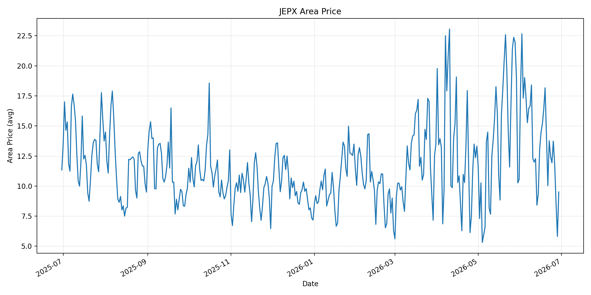
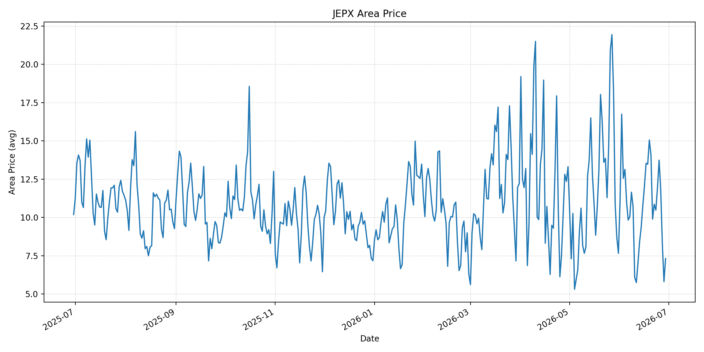
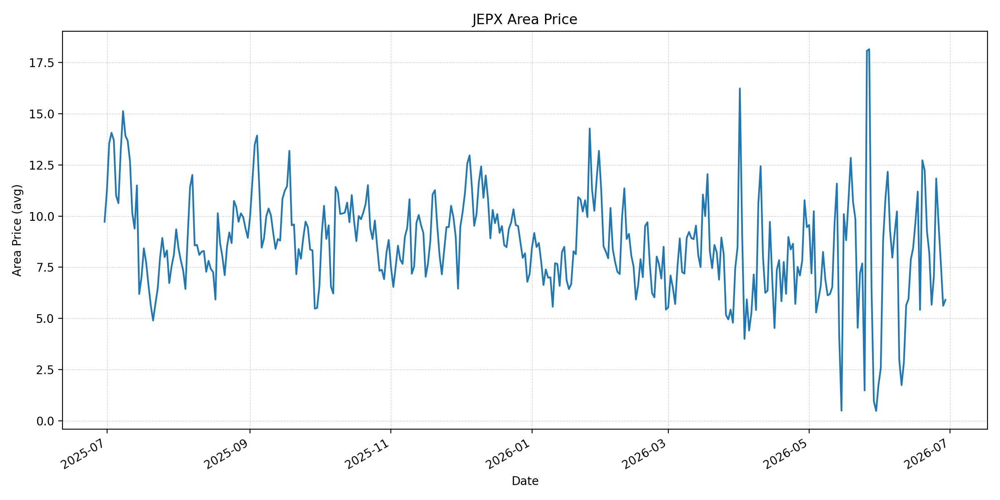
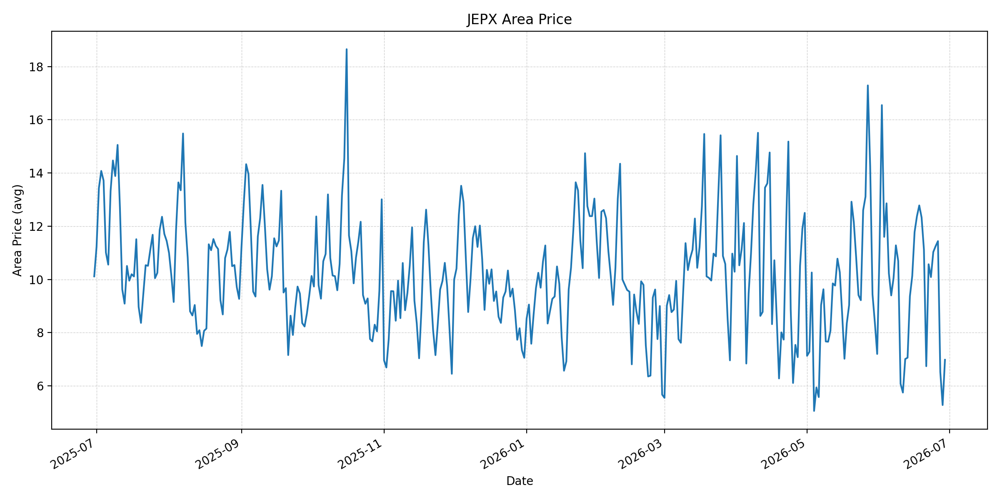
短期トレンド
JKMとJEPXシステムプライスの推移グラフ
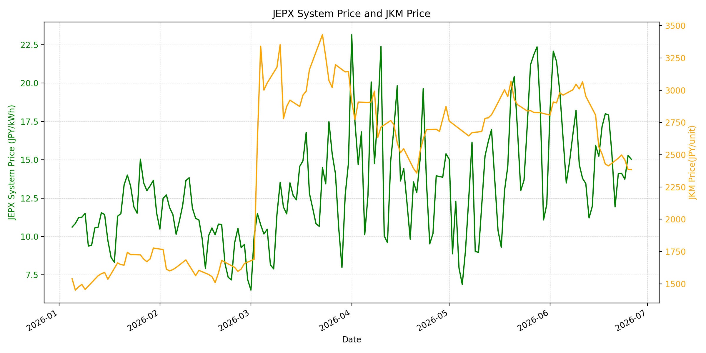
WTIの推移グラフ
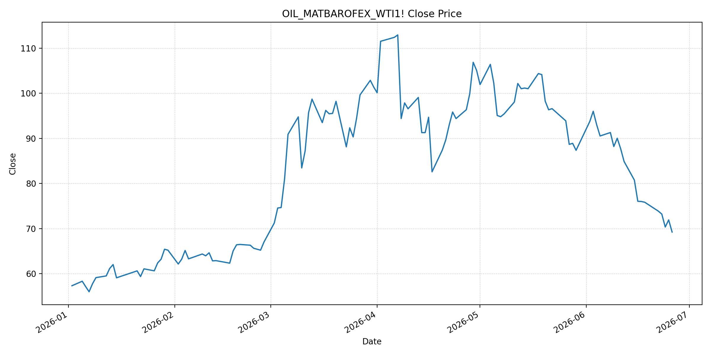
JEPXシステムプライス
JEPXは受渡日ベースの最新非空値で評価しています。最新値は 2026-06-29 分です。先週終値は 2026-06-22 時点の直近値、先月終値は 2026-05-31 時点の直近値で評価しています。
| エリア | 当日価格 | 前日価格 | 前日比（％） | 先週終値 | 先週比（％） | 先月終値 | 先月比（％） | 過去最高値 | 最高値比（％） |
|---|---|---|---|---|---|---|---|---|---|
| システム | 11.37 | 8.02 | 41.77 | 14.10 | -19.36 | 12.10 | -6.03 | 64.06 | -82.25 |
| 北海道 | 13.96 | 9.47 | 47.41 | 15.92 | -12.31 | 11.38 | 22.67 | 73.92 | -81.11 |
| 東北 | 10.47 | 9.04 | 15.82 | 16.69 | -37.27 | 14.64 | -28.48 | 84.92 | -87.67 |
| 東京 | 15.38 | 14.88 | 3.36 | 18.49 | -16.82 | 21.65 | -28.96 | 86.13 | -82.14 |
| 中部 | 15.05 | 7.68 | 95.96 | 16.88 | -10.84 | 15.25 | -1.31 | 52.06 | -71.09 |
| 北陸 | 9.59 | 5.95 | 61.18 | 13.77 | -30.36 | 10.56 | -9.19 | 46.48 | -79.37 |
| 関西 | 9.51 | 5.81 | 63.68 | 13.77 | -30.94 | 10.56 | -9.94 | 46.48 | -79.54 |
| 中国 | 7.32 | 5.81 | 25.99 | 10.86 | -32.60 | 7.66 | -4.44 | 46.48 | -84.25 |
| 四国 | 5.91 | 5.62 | 5.16 | 8.19 | -27.84 | 1.74 | 239.66 | 46.48 | -87.29 |
| 九州 | 6.98 | 5.28 | 32.20 | 10.57 | -33.96 | 7.20 | -3.06 | 40.54 | -82.78 |
LNG先物価格
最新値は 2026-06-26 の LNG(close) です。先週終値は 2026-06-19 時点の直近値、先月終値は 2026-05-29 時点の直近値で評価しています。
| 当日価格 | 前日価格 | 前日比（％） | 先週終値 | 先週比（％） | 先月終値 | 先月比（％） | 過去最高値 | 最高値比（％） |
|---|---|---|---|---|---|---|---|---|
| 2385.00 | 2386.00 | -0.04 | 2414.00 | -1.20 | 2826.00 | -15.61 | 10319.00 | -76.89 |
石油先物価格
最新値は 2026-06-26 の OIL(close) です。先週終値は 2026-06-18 時点の直近値、先月終値は 2026-05-29 時点の直近値で評価しています。
| 当日価格 | 前日価格 | 前日比（％） | 先週終値 | 先週比（％） | 先月終値 | 先月比（％） | 過去最高値 | 最高値比（％） |
|---|---|---|---|---|---|---|---|---|
| 69.23 | 71.92 | -3.74 | 75.85 | -8.73 | 87.36 | -20.75 | 123.70 | -44.03 |
ニュース
イラン情勢に関するニュース
- 2026年6月28日、APは、米軍によるイラン空爆の後、イランがバーレーンとクウェートをドローン・ミサイルで攻撃し、米国が攻撃を続ければ和平交渉を完全停止すると警告したと報じました。パキスタン仲介の技術協議は継続予定とされています。 参照: AP, 2026-06-28
- 2026年6月28日、Guardianは、米イラン覚書の文言がレバノン停戦とホルムズ管理で曖昧だったため、双方が違反を主張し、10日前に結ばれた暫定合意が崩れつつあると分析しました。合意支持派はテヘラン内でも守勢に回っています。 参照: The Guardian, 2026-06-28
ホルムズ海峡経由の石油・LNGに関するニュース
- APは、ホルムズ海峡をめぐり、米海軍が関与する多国籍海事機関がオマーン寄り航路を拡張するとした一方、イラン外相は海峡の再開と運用はイランが監督すべきだと主張したと報じました。直近72時間で通航は増えましたが、日量の過去平均には届いていません。 参照: AP, 2026-06-28
- 2026年6月28日、MarketWatchは、米イランの追加空爆を受けて、ホルムズ海峡が再び事実上閉鎖される懸念から原油価格が上昇したと報じました。WTIは70ドル近辺、Brentは72ドル近辺とされ、月間ではなお大きく下落した水準です。 参照: MarketWatch, 2026-06-28
ホルムズ海峡経由でない石油・LNGに関するニュース
- 過去24時間で、日本向けの非ホルムズ新規大型調達やLNG長期契約を示す強い追加報道は確認できませんでした。直近の価格変動は、非ホルムズ供給増ではなく、ホルムズ航路の安全性と米イランの軍事応酬が主因です。 参照: MarketWatch, 2026-06-28
- Guardianは、覚書が海峡の安全通航に関する「最善努力」を定める一方、航路指定や費用負担を明確化していなかったと指摘しました。非ホルムズ代替よりも、ホルムズの運用ルールを誰が決めるかが引き続き価格形成の焦点です。 参照: The Guardian, 2026-06-28
日本国内のイラン戦争に関係するニュース
- 過去24時間で、JEPX制度、国内電力需給ルール、または日本政府の対イラン戦争関連対策を直接変更する主要な新規公表は確認できませんでした。
- 関連する国内材料として、経済産業省は2026年5月20日、2026年度夏季は全エリアで安定供給に最低限必要な予備率3％を確保できるため節電要請を実施しないと発表しています。一方で、国際情勢の変化、異常気象、火力発電所の地域集中はリスクとして明記されています。 参照: 経済産業省, 2026-05-20
インサイト
ニュース事項による日本の電力市場への影響（短期：数日〜1週間）
- JEPXシステムプライスは 11.37 円/kWhで前日比 41.77% と週末安値から反発しました。ただし先週比は -19.36%、東京も 15.38 円/kWhで先週比 -16.82% と低く、国内スポットはまだ燃料安の影響を受けています。
- OILは 69.23 で前日比 -3.74%、先週比 -8.73%、LNGは 2385.00 で先週比 -1.20% です。燃料データは下落基調ですが、APとMarketWatchが示す米イランの追加攻撃は、数日内に原油リスクプレミアムを戻す材料です。
- 中部は 15.05 円/kWhで前日比 95.96%、北陸は 9.59 円/kWhで前日比 61.18% と地域差が大きくなっています。短期では、燃料安だけでなく、休日明け需要、天候、地域別供給力、ホルムズ報道が価格変動を増幅します。
ニュース事項による日本の電力市場への影響（長期：1ヶ月〜半年）
- ホルムズ通航が制度的に安定すれば、LNGは過去最高値比 -76.89%、OILは -44.03% と低い水準にあり、日本の燃料費見通しは改善しやすいです。一方、米イラン覚書の曖昧さが残る限り、船舶保険と通航調整のコストは消えません。
- APが報じたイランの「海峡運用はイランが監督する」との主張は、60日間協議の最大リスクです。1ヶ月〜半年では、スポット原油価格よりも、航路指定、機雷除去、通航料、制裁解除の実務がLNG・石油調達コストを左右します。
- 国内では節電要請なしの前提が維持されていますが、システム価格は過去最高値比 -82.25% と低位でも、北海道は先月比 22.67% と高いです。燃料安が進んでも、夏季需要と地域別供給力がJEPXを下支えする可能性があります。